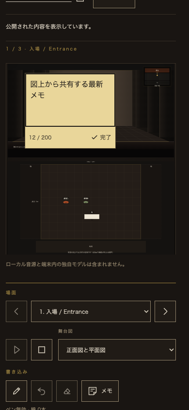
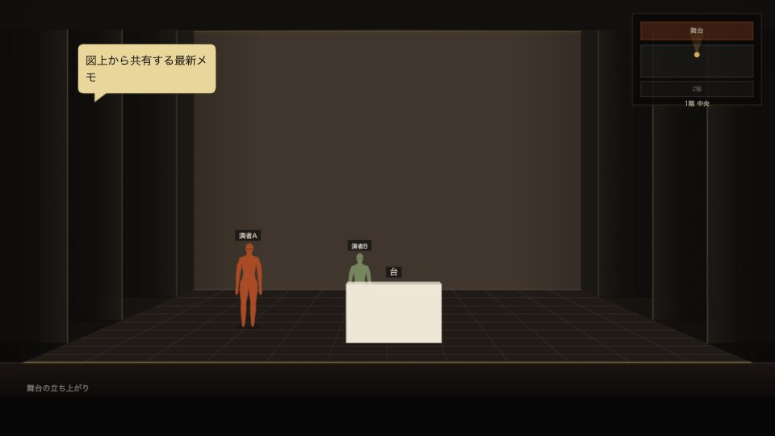

メモをダブルクリックして、その場で入力
2026年9月10日・ローカル実装と画面確認済み。本家・ベータが共用するStage Sketch Viewerの個人付箋が対象です。
利用者体験
正面図・平面図の自分用メモをダブルクリックすると、その位置で文章を入力できます。選択してEnterでも開けます。Enterは改行、「完了」・Esc・Ctrl/⌘+Enterまたは欄外へのフォーカス移動で終了。文字は自動保存され、側面の入力欄にも反映します。形・色・寸法・位置を保持し、クリックで選択、ドラッグで移動、右下でサイズ変更を続けて使えます。本家と同じ書体・15px、タッチ端末は16px、完了ボタンは44px以上です。
元のViewerで確認する。既存の「テスト」をダブルクリックし、図上入力を開いた状態にしています。今回、このメモの文章や見た目は変更していません。
保存・認可
既存の個人ノート内のtextだけを更新します。匿名ベータではこのブラウザ内、既存アカウント方式では本人用ノートの保存・同期を使用。フレーム応答の順番を識別し、入力途中に古い文章へ戻ることを防ぎます。日本語変換中は入力欄を作り直しません。ショーJSON・閲覧認可・サーバーの保存形式は変更せず、200字のプレーンテキスト制限を継承します。
隔離フレームの入力許可は、この個人メモ用textareaそのものに限定。従来の編集画面の入力・ショートカットは遮断し、履歴の読み取り専用図では図上入力を開けません。オーナーへは既存の明示共有ボタンを押したときだけ、最新の文章を含む画像を送ります。
実行した検証
- 対象Nodeテスト：60 / 60成功。
- Chromeの操作検証：6グループ成功、pageerror 0。ダブルクリック・Enterで開始、改行、フォーカス、側面反映、素早い連続入力、文章のUndo/Redo、IMEの変換確定模擬、HTML文字列の安全表示、200字上限、完了操作を確認。
- 場面切替・再読み込みで保持。公開ショーと保存済みの編集ショーが不変。暗黙の共有0件、明示共有で最新文字が画像に反映。
- ドラッグ・サイズ変更の回帰検証、履歴用の読み取り専用描画へのダブルクリック拒否を確認。
- 日英 × 幅1440 / 768 / 390 / 844pxの8条件で、図内に収まる入力欄、ラベル、44pxの完了操作を確認。タッチ端末模擬では平面図の入力・完了・16px文字を確認。
- 既存Worker・リアルタイム共有・ゲスト関連を含む全Nodeテスト：888 / 891成功。下記3件の留保あり。
- 変更したJSと検証ツールの構文、python3 build_stage.py --check、python3 build_study.py --check、git diff --check成功。
全体検査の留保：今回編集していない本家の3検査が失敗しました。stage-prop-shapesのpartBoxes呼び出しに対する正規表現、stage-session-polishのゲスト入力ガードの正規表現、stage-venue-libraryのstage-i18n版101の期待値です。同時作業のファイルを変更して通すことはしていません。公開ビルド検査はtry.html、本家の描画・翻訳・CSSなどの生成物の古さを検出。別作業の完了後に生成・全体検査を再実行する必要があります。
ブラウザ結果 · 対象Node結果 · 全Node結果 · 公開ビルド検査 · 作業中に変化したファイルの記録
ローカルの実画面
開いている8802のViewerでも、「テスト」をダブルクリックして図上のtextareaと完了ボタンが出ることを確認。日本語表示、本家の書体・配色、入力フォーカスを目視確認しました。以下は専用の架空ショーを用いた検証画像です。
スマホ幅の図上入力

共有された最新メモ

変更ファイル
stage-study-sticky.js、stage-study-frame.js、stage-study-viewer.js、stage-study.css、study.html、build_study.py、生成されるstudy-frame.html、design/TOKEN_SHEET_study-links_2026-09-09.md。追加：tools/study-sticky-inline-browser-check.mjs、この確認記録、sticky-inline-qa/の検証資料。
未確認・本番適用
iPhone / iPad Safari実機でのダブルタップ、日本語キーボード、スクロールは未確認です。今回は既存の個人ノートへの文章入力経路の追加で、新しいCloudflare設定・DO・migrationは不要です。本番へ適用する際は、既存の事前学習機能の設定を維持し、今回のクライアント資源と生成フレームを揃えて配布してください。新規の公開資源や許可一覧の追加はありません。
ローカルのみの実装です。commit・push・デプロイ・公開・外部送信・秘密情報登録は行っていません。着手時の差分とハッシュを保存し、対象ファイルだけ編集しました。既存の未コミット差分は保持し、同時編集された本家コード・生成物を巻き戻していません。